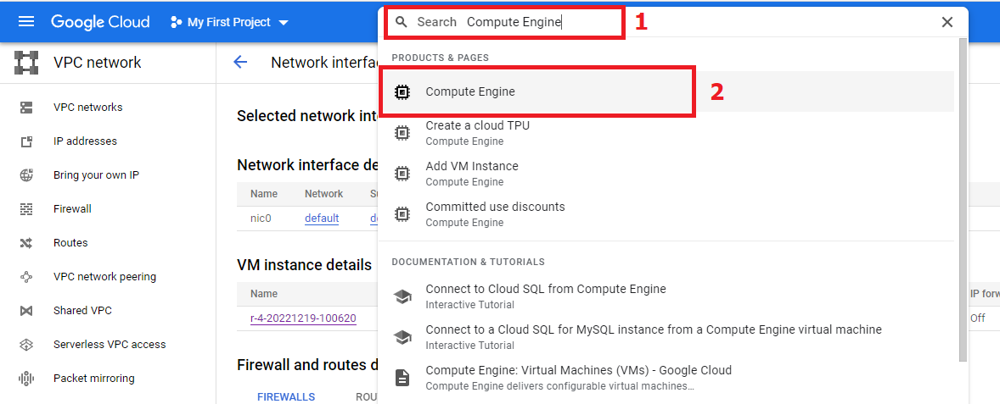
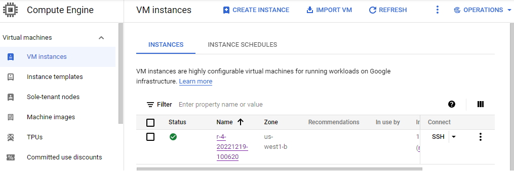
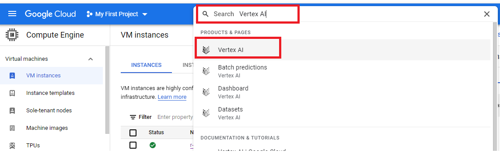
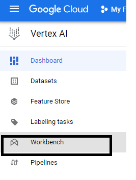
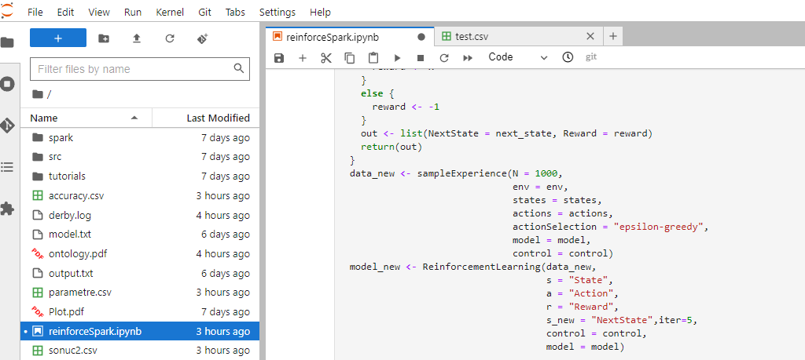

In this article, we see how to perform R big data application on google cloud. 1. First we need to sign in google cloud with trial or Professional account 2. Write “Compute Engine” in search box as below: 
Click “create instance” to create new instance below: After that, we can create new jupyternotebook to start writing R codes
Write “Vertex AI” in search box to go notebook creation page as follow:  In this section, we can use “new notebook” menu to create jupyterlab in google cloud. The notebook should seem to like this:
 In the left bottom of the screen, you see R|idle or R|busy. If yo urun the command for a while, R|busy indicates that the codes are being executed and further command operation is not allowed until the end of the process. We can write new commands once R|idle emerges.One cell may include one or further command rows o be executed.